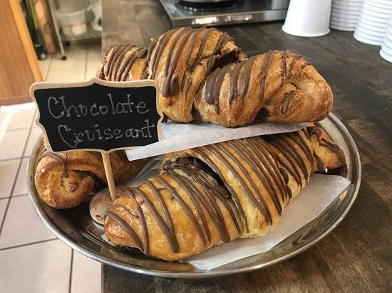

The Story
Why It Stands Out

Burro Avenue Fixture
KennaBelles is established and woven into daily Cloudcroft life — not just a seasonal novelty stop. Locals treat it as part of their morning routine.
Named After the Baker
The bakery is named after owner and baker Kenna Leonard, who has built the business into one of the core food stops on Burro Avenue.
Local Coverage
Featured by the Cloudcroft Reader as one of the town’s essential stops and included in their 2025 grocery-and-pantry roundup as a core bakery option.